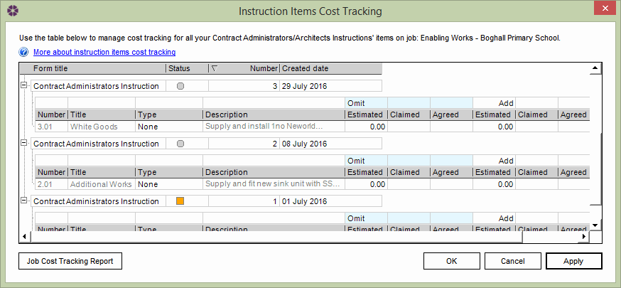

Instruction Items Cost Tracking |
When an Architects/Contract Administrators Instruction is issued, it is fairly often that the "final" cost is not agreed. However the Client will want to know what impact the Instruction has on the overall budget, so an estimated cost needs to be included.
For this reason, users need to be able to return to their Instruction and record not only the original estimate, but also the claimed and agreed prices at later dates. It is important that these can be included in regular cost reports.
This is possible by using the 'Instruction Items Cost Tracking' editor. Here users can open both draft and issued Instructions, and then insert and update the estimated, claimed and agreed costs for each Instruction Item in the appropriate columns.
The latest Instruction costs can then be exported or included in reports using the Job Cost Tracking Report feature.
To open the 'Instruction Items Cost Tracking' window, the user needs to open the relevant Job and then either:
This will open 'Instructions Items Cost Tracking' in a separate window and display an overview of the Architects/Contracts Administrators Instructions for that Job where the users have the ability to amend the costs or information of these Instructions:

Please Note: Forms that have been issued are displayed with a grey icon while draft forms are displayed in orange.
Any Instructions can be expanded to display all of their individual Items by clicking on the icon. The users can then add additional information in these Items, then click the 'Apply' button to save the changes made and then 'OK' to close the window.
Any changes that are made to an Instruction here will be synchronised with the Instruction editor and vice versa. Please Note: this only applies to Instructions that are in a draft state. Any changes made to an issued Instruction will not be reflected in the Instruction editor.
It is possible to generate a 'Job Cost Tracking Report' within NBS Contract Administrator. The report will show a break down of both issued and draft Architects/Contract Administrators Instructions. To generate the 'Job Cost Tracking Report', either:
Once the report has been generated it can be exported to a PDF (Portable Document Format) document. To export the report, click on the 'Export' button in the print preview window, select a location and click on the 'Save' button.
Please Note: A PDF reader will need to be installed on the machine to view the PDF document. A PDF reader can be downloaded from www.adobe.com/products/acrobat/readstep2.html
See also:
Reports
Editing a Form
Instruction items cost tracking (online demo)